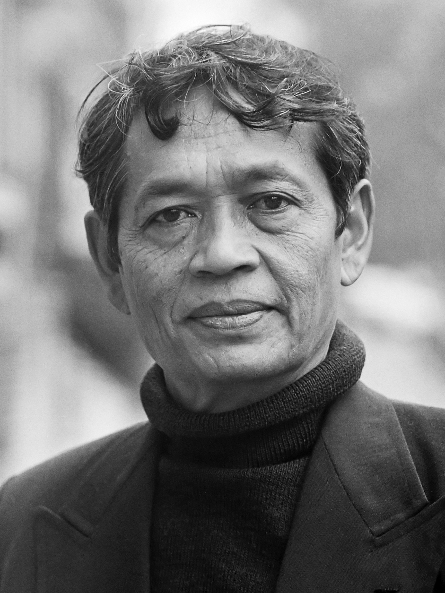

Mohtar Lubis
| Lahir | : | 7 Maret 1922 |
| Meninggal | : | 2 Juli 2004 (umur 82) |
| Profesi | : | Penulis |
Mohtar Lubis (1922-2004) adalah seorang jurnalis dan penulis Indonesia yang diakui secara luas sebagai salah satu tokoh penting dalam sejarah jurnalisme Indonesia. Ia lahir di Padang, Sumatra Barat, dan memulai kariernya sebagai jurnalis pada masa pendudukan Jepang. Setelah kemerdekaan Indonesia, ia mendirikan harian "Indonesia Raya" dan menjadi salah satu penulis editorial terkemuka di negara tersebut. Mohtar Lubis dikenal karena keberaniannya dalam menyuarakan pandangan kritis terhadap pemerintah dan isu-isu politik, yang sering kali membuatnya berkonflik dengan pemerintah Orde Lama dan Orde Baru. Karya jurnalismenya yang tajam dan komitmen terhadap kebebasan pers menjadikannya figur penting dalam perjuangan melindungi kebebasan berekspresi di Indonesia.
Kehidupan Saat Masa Orde Baru
Jurnalis Kritis
Mohtar Lubis memegang peran krusial sebagai seorang jurnalis kritis selama masa Orde Baru di Indonesia. Melalui surat kabar "Indonesia Raya," ia menjadi salah satu penulis editorial paling vokal yang berani mengkritik pemerintah dan mengungkap pelanggaran hak asasi manusia, korupsi, dan penyalahgunaan kekuasaan. Dalam konteks di mana kebebasan berekspresi dibatasi, tulisannya berfungsi sebagai suara bagi mereka yang tidak memiliki wadah untuk menyuarakan ketidakpuasan terhadap rezim otoriter. Peran kritisnya membantu menggugah kesadaran masyarakat tentang kebijakan yang merugikan dan melanggar hak-hak warga negara serta memperjuangkan kebebasan pers di tengah tekanan politik yang kuat, menjadikannya figur penting dalam perjuangan untuk demokrasi dan hak asasi manusia di Indonesia.
Pengaruh pada Jurnalisme dan Demokrasi
Pengaruh Mohtar Lubis pada jurnalisme dan demokrasi selama masa Orde Baru di Indonesia sangat besar. Sebagai seorang jurnalis kritis dan berani, ia memberikan contoh nyata tentang keberanian dan integritas dalam jurnalisme. Pengungkapan yang tajam dan terbuka atas pelanggaran hak asasi manusia, korupsi, dan penyalahgunaan kekuasaan oleh pemerintah Orde Baru melalui tulisannya membantu menginformasikan masyarakat tentang realitas politik yang sering kali diubah atau ditutupi. Ia juga menjadi inspirasi bagi generasi jurnalis muda dan aktivis untuk berjuang melawan represi, mempertahankan kebebasan pers, dan memperjuangkan demokrasi. Dalam menghadapi tekanan pemerintah, Mohtar Lubis menunjukkan bahwa media independen adalah penjaga penting bagi demokrasi yang sehat dan bahwa penegakan kebebasan berbicara adalah prasyarat bagi kemajuan politik dan masyarakat yang inklusif.